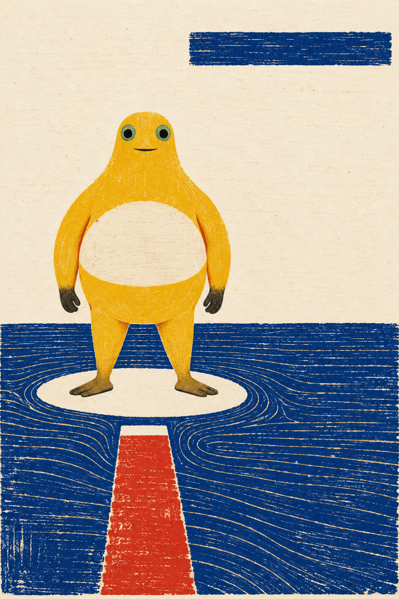

← 创作手记2026-10-18 · 画面里的问题与取舍
按留存作品与创作记录整理的阶段手记；原图日期沿用实际创作日，入馆时间另列，不把本次整理称为当天新增创作或全天总结。研究与淘汰图不作成品展示。
还差一步的路
红色的路在浅色小岛前停住，留下一道没有接上的缝。奶蛙站着没有动，周围的蓝色刻线先绕开了它。

还差一步的路 · V1 · 采用的定稿版本；具体来源与权利另列。画面为静态AI绘画，不据单张图像断言角色内心或时间过程。
来源与权利
本项目的AI辅助二维创作，不代表官方奶龙、参考艺术家或收藏机构。奶蛙为社区衍生形象；角色与参考作品权利归各自权利人。本馆不授予第三方内容开放许可，参考原图仅提供来源链接。